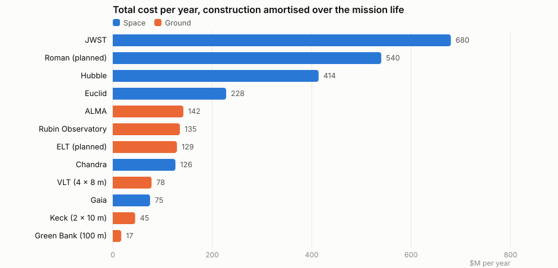
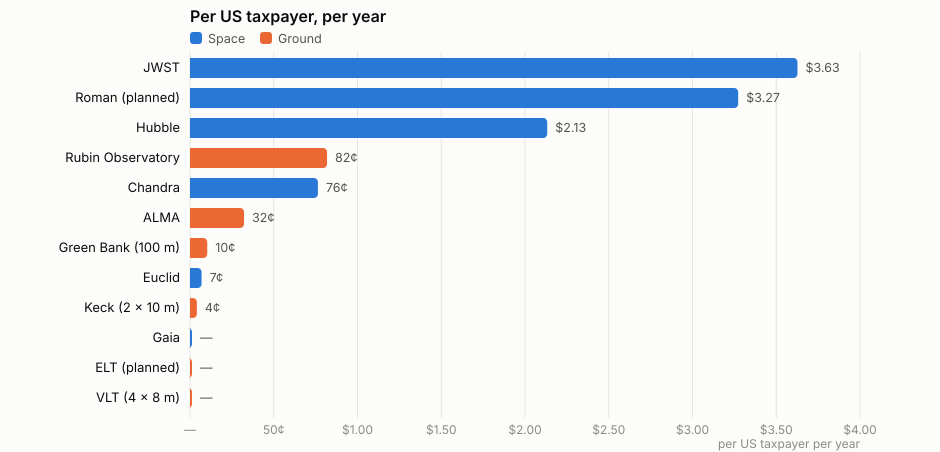
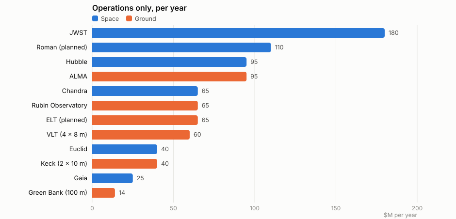

A telescope's cost is usually quoted as one alarming number at launch. Spread over the years it actually works, the picture changes: JWST consumes about 680 million dollars a year, Hubble about 410 million after thirty-six years, and the largest ground-based instruments run at a fifth of that for mirrors many times the size. Charged to the 165 million people who file a US federal return, the twelve telescopes here come to about eleven dollars a year each, nine of it for three space telescopes. Against a federal spending dollar of which all of science is one cent and NASA a third of one, the whole enterprise is small enough to be easy to lose in the noise, and that is the point of writing the numbers down.



The difference is construction, and the fact that it cannot be revisited. A space telescope has to be built to work the first time and forever, launched, and then left alone; JWST's ten billion bought a 6.5-metre mirror. A ground telescope's mirror costs a tenth as much for several times the diameter, and it takes a new instrument every few years for the price of one of JWST's. Hubble is the exception that proves it: five servicing missions kept it at the front of the field for three decades, and they are most of its bill.
Rubin sits high on the amortised chart for a different reason. Its 700 million dollar construction is spread over only the ten years of its survey, because that is what it was built to do; the telescope will outlive the survey and the number will fall. Green Bank, at the bottom, is the working example of a large single dish doing the same 21 cm hydrogen-line science that a backyard horn does, at fourteen million a year.
Taxpayers, almost entirely, and in every case through a science agency funded from general revenue: NASA and the National Science Foundation in the United States, the European Space Agency and the European Southern Observatory through their member states' science ministries, Japan and Canada for their shares. There is no revenue side. The data become public after a proprietary period of a year or less and the science is not sold.
Against the federal spending dollar, retirement, health, defence and interest on the debt take about two thirds; everything the government visibly does, transport, education, justice, agriculture, takes a tenth; and all of science, NASA, the NSF, the NIH and the Department of Energy's laboratories together, takes about one cent. NASA on its own is a third of a cent, and the telescopes on these charts are a few percent of NASA. An average filer pays about fourteen thousand dollars of federal income tax; the twelve telescopes here are eleven dollars of it.
| Telescope | Type | First light | Construction, $M | Life, yr | Operations, $M/yr | Total, $M/yr | US share | Per US taxpayer/yr | Who pays |
|---|---|---|---|---|---|---|---|---|---|
| JWST | Space | 2022 | 10,000 | 20 | 180 | 680 | 88% | $3.63 | NASA, ESA, CSA |
| Roman (planned) | Space | 2027 | 4,300 | 10 | 110 | 540 | 100% | $3.27 | NASA |
| Hubble | Space | 1990 | 11,500 incl. servicing | 36 | 95 | 414 | 85% | $2.13 | NASA, ESA |
| Euclid | Space | 2023 | 1,500 | 8 | 40 | 228 | 5% | 7¢ | ESA |
| ALMA | Ground | 2013 | 1,400 | 30 | 95 | 142 | 38% | 32¢ | NSF, ESO, Japan |
| Rubin Observatory | Ground | 2025 | 700 | 10 | 65 | 135 | 100% | 82¢ | NSF, DOE |
| ELT (planned) | Ground | 2029 | 1,600 | 25 | 65 | 129 | 0% | — | ESO member states |
| Chandra | Space | 1999 | 1,650 | 27 | 65 | 126 | 100% | 76¢ | NASA |
| VLT (4 × 8 m) | Ground | 1998 | 550 | 30 | 60 | 78 | 0% | — | ESO member states |
| Gaia | Space | 2014 | 600 | 12 | 25 | 75 | 0% | — | ESA |
| Keck (2 × 10 m) | Ground | 1993 | 140 | 30 | 40 | 45 | 15% | 4¢ | Caltech, UC, NASA |
| Green Bank (100 m) | Ground | 2000 | 100 | 30 | 14 | 17 | 100% | 10¢ | NSF, partners |
Every figure here is approximate and rounded, taken from public budget documents and agency reporting in 2026 values; construction costs are then-year totals, not inflation adjusted, and the mission lives are design lives or elapsed years as noted. The per-taxpayer figures depend on the taxpayer count chosen, 165 million filers here, and on the funding splits as publicly reported. None of the rankings move with reasonable changes to those choices; the individual numbers can move by a quarter.